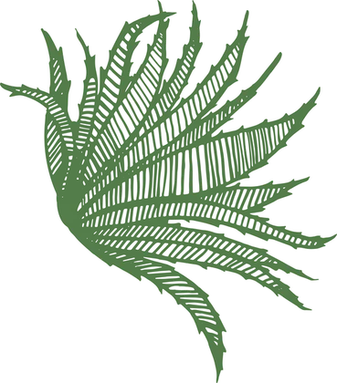
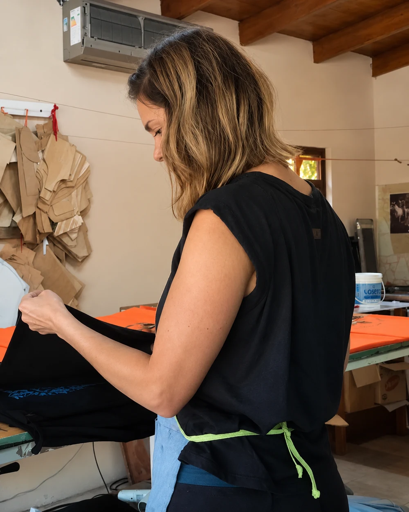
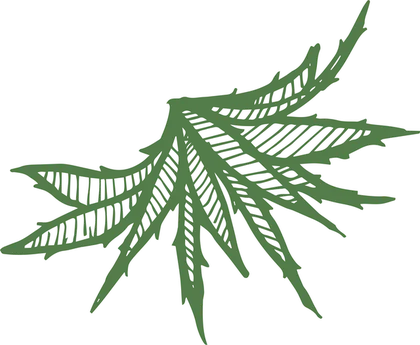
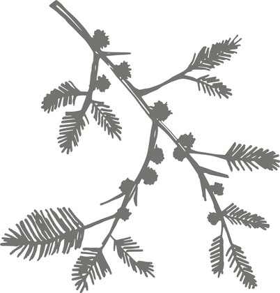
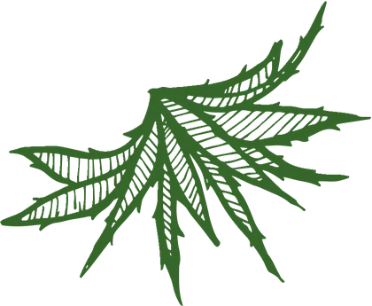
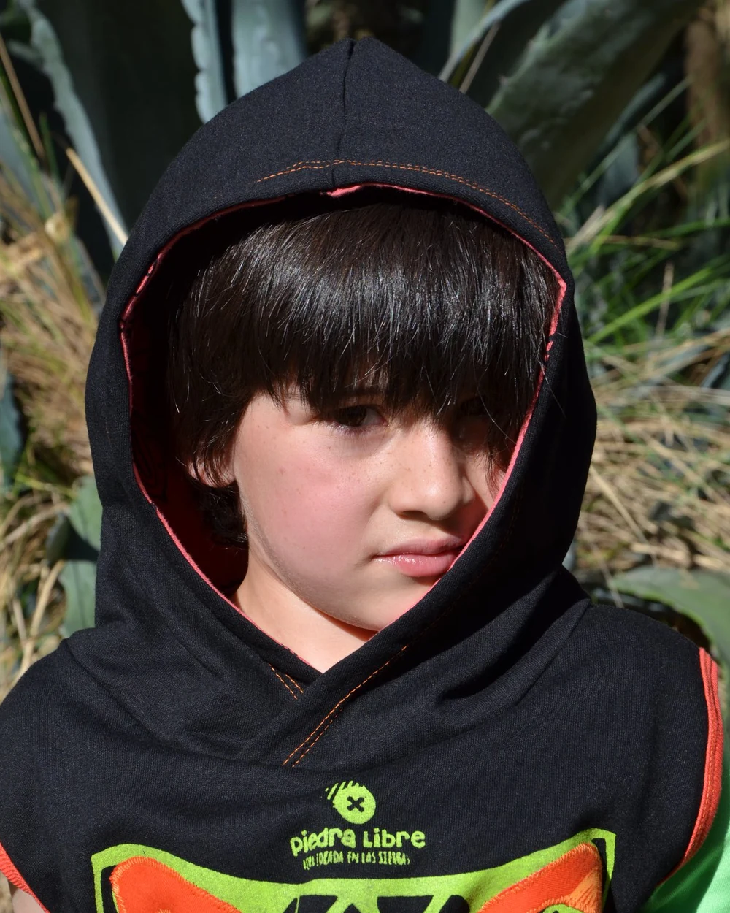

Nosotros
Una marca chica, hecha a mano.
Piedra Libre no es una tienda que compra y revende. Es un taller. Todo lo que ves en la web salió de una mesa de corte y de una máquina de coser en Los Molles.
Cómo empezó
Empezó con Mapi y una máquina
Soy Mapi, diseñadora de indumentaria. En 2006 elegí las sierras para vivir, y al año siguiente empecé a coser ropa para chicos. Así nació Piedra Libre en 2007.
Para hablar de Piedra Libre tengo que usar un "nosotros inclusivo", porque esta marca es gracias a todas las personas que aportaron sus manos y sus ideas para hacerla posible. Hoy seguimos con un equipo chico: Marina dibuja los diseños, Noe cose como nadie, y algunas amigas más se suman según la temporada.
En un momento decidimos dejar de usar diseños industrializados. Por eso ahora estampamos nuestras propias telas y usamos moldería propia: eso nos deja hacer piezas originales, en ediciones limitadas, y meter un detalle bien nuestro. Un puma puede sacar la lengua de una remera. La cola de un gliptodonte puede sobresalir del diseño. No es un dibujo plano: es un aplique cosido, y sobresale de verdad.
Abrimos el local en Don Julio 150 para que la gente de Los Molles y de Merlo pudiera ver y tocar las prendas antes de llevarlas. Seguimos siendo un equipo chico, así que si un talle se agota hay que esperar a que lo volvamos a cortar. A cambio, si querés un color que no está publicado, lo podemos hacer.




Materiales
Por qué siempre algodón
Probamos otras telas y volvimos siempre a la misma. El algodón respira, no pica, no le hace nada a una piel sensible y aguanta el uso de todos los días, que en un chico es mucho uso.
También pasa algo con el color: el algodón toma bien los tonos saturados con los que trabajamos. El verde manzana es verde manzana, el fucsia es fucsia. En otras telas se apagan.
Los apliques son del mismo algodón que la prenda. Por eso encogen parejo y no se deforman después del primer lavado.
Cómo se cuidan
- Lavado normal, del revésAgua fría o tibia. No hace falta lavado a mano ni nada especial.
- Sin secarropas calienteEl calor fuerte es lo único que puede levantar el borde de una estampa.
- No planchar sobre la estampaPlanchá alrededor, o del revés con un trapo en el medio.
- Si se descose un apliqueTraelo o mandanoslo: lo volvemos a coser nosotros.
Nos alegra cuando una clienta nos cuenta que un vestido se usó tanto que terminó de remera, o que un buzo aguantó un montón de lavados. También agradecemos cuando nos dicen qué podríamos mejorar: es lo que nos permite seguir creciendo.

Dónde vivimos
Los Molles y las Sierras de los Comechingones
Los Molles es un pueblo chico del Valle del Conlara, en San Luis, pegado al cordón de los Comechingones y a pocos minutos de Merlo. Tiene arroyo, tiene monte y tiene una cantidad de bichos que la mayoría de la gente que pasa de vacaciones ni se entera de que están.


El nombre del pueblo viene del molle, un árbol nativo de hoja chica y olor fuerte que crece por todos lados acá. Es el mismo molle que está cosido en varias de nuestras prendas.
Los diseños salen de eso: de lo que hay alrededor. El zorro gris que cruza el camino de tierra al atardecer, el cóndor andino planeando alto sobre la sierra, la llama, el yaguarundí que casi nunca se deja ver, el puma del que todos hablan, la tortuga, la chinita, el colibrí, el algarrobo, la flor de cardón.
No es una decisión de marketing: es lo que tenemos a mano para dibujar.
- Zorro gris
- Cóndor andino
- Llama
- Yaguarundí
- Puma
- Tortuga
- Chinita
- Colibrí
- Algarrobo
- Flor de cardón
- Molle
Ya está
Ahora sí, mirá las prendas
Te invitamos a recorrer la tienda. Y no te olvides que siempre podés escribirnos por WhatsApp para cualquier consulta o sugerencia.